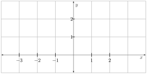
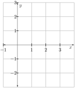
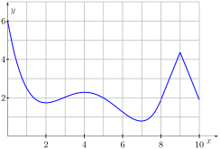
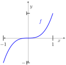
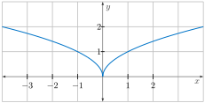
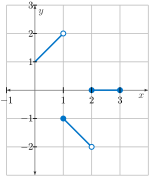

Handout Daily Prep 3.3 - Using Derivatives to Identify Extreme Values
Section Overview
The theme of this chapter centers on what we can learn from key information regarding the derivative of a function. In Section 3.3, we focus on how the derivative detects extreme values of functions. That is, we investigate how information from the derivative function can tell us whether the original function has a relative maximum or relative minimum at a given point. While many of the ideas in this section will be natural and intuitive (and ones we’ve discussed briefly to some extent earlier in the course), there is considerable new language and reasoning to learn and understand.
Section Basic learning objectives
These are the tasks you should be able to perform with reasonable fluency when you arrive at our next class meeting. Important new vocabulary words are indicated in italics.
-
Define local maximum, local minimum, global maximum, and global minimum.
-
Identify the difference between local extrema and global extrema.
-
State the definition of a critical number.
-
Find all critical numbers of a function, given its derivative.
-
State the First Derivative Test and explain both its purpose and how it is used.
-
State and apply the following fact: If the function \(f\) has a local extremum at \(x=c\text{,}\) then \(c\) is a critical number of \(f\text{.}\) Be able to give examples demonstrating that the opposite is false: If \(c\) is a critical number of \(f\text{,}\) then there is not necessarily a local extremum at \(c\text{.}\)
-
State the Second Derivative Test and explain both its purpose and how it is used.
-
Define inflection point.
Section To prepare for class
Complete all actions listed below. Respond to the questions highlighted with Submit.
-
Read motivating questions and the introduction to section 3.3 (up until Preview Activity 3.3.1).
-
[Submit] Do Preview Activity 3.3.1.
-
Do these problems.
-
Plot the graph of \(f(x) = \sqrt{|x|}\) on each of the following domains. Then, determine if the function has a global maximum and a global minimum on that domain. Feel free to use GeoGebra to verify your thinking.
-
\(\displaystyle [-4,4]\)
-
\(\displaystyle [-4,0)\)
-
\(\displaystyle (-4,0)\)
-
\(\displaystyle (-\infty, \infty)\)
Figure 56. -
-
Even a closed, bounded interval does not guarantee the existence of global extrema. For example, on \([0,3]\) plot the graph of\begin{equation*} f(x) = \left\{ \begin{array}{cc}x+1 & {\textrm{if }} 0 \leq x <1 \\ -x & {\textrm{if }} 1 \leq x <2 \\ 0 & {\textrm{if }} 2 \leq x \leq 3\end{array} \right\}. \end{equation*}
Figure 57.
-
-
Watch video Finding Local and Global Extrema (5:05).
-
Ask Copilot “In calculus, why are critical numbers named the way that they are?”
-
Read section 3.3.2 (up to Activity 3.3.2).
-
Do this problem.
-
The graph of a continuous function \(f\) is given in Figure 58. Estimate the location of all relative and global maxima and minima on the domain \([0,10]\text{.}\) What do you notice about the derivative of \(f\) at these locations?
Figure 58.
-
-
Watch video Identifying Critical Values Graphically (4:20).
-
Watch video Finding Critical Values (3:11).
-
[Submit] Explore applet Critical Values. Then determine the critical values for the given function in the applet. What is the behavior of \(f'(x)\) on the left and the right of these critical values? Does that behavior tell you if the critical value is a local maximum or local minimum? Explain.
-
Do the following problem.
-
Consider \(f(x)=x^{3}\text{.}\) Locate a critical value of \(f\) both graphically and algebraically. Explain why there is no maximum or minimum there.
Figure 59.
-
-
Watch video Using the First Derivative Test (11:08). This video shows how to apply the First Derivative Test in practice, by using the sign table of the derivative to determine the intervals of increasing/decreasing behavior of a function.
-
[Submit] Explore. Submit a screenshot with a reasonable score (like Professor Buske got on his first try...see Figure 60) to the Activity in the applet: Reconstruct \(f\) from its First Derivative.
![An interactive graph titled “Reconstruct f from its First Derivative.” The coordinate plane shows scattered blue points representing values of f′ at various x-values. A smooth red curve is drawn through these points, representing a reconstruction of the original function f. The curve is slightly decreasing for negative x, reaches a minimum near x = 0, then increases for positive x with a local maximum near x = 5 before decreasing slightly. Interface elements such as checkboxes and buttons surround the graph.](external/AppletReconstructf.jpg)
Figure 60.
Section After class
Solidifying the concepts discussed in class through practice is necessary to build your skills.
-
Read section 3.3.3.
-
Watch this video The Second Derivative Test (8:58).
-
Ask Copilot “In the second derivative test in calculus, what can I conclude when \(f''(x) = 0\text{?}\)”
-
Watch video Quick Review - Extreme Values of Functions (4:10).
-
Read section 3.3.4 - Summary.
-
Do this problem.
-
If \(a\) and \(b\) are positive constants, find all critical points of\begin{equation*} g(t) = ae^{t} + be^{-t}. \end{equation*}Hint: Try factoring \(e^{-t}\) out of the derivative.
-
Section Advanced learning objectives
In addition to mastering the basic objectives, here are the tasks you should be able to perform after class, with practice:
-
Construct a sign chart for the first derivative. Use it to determine the intervals of the increasing/decreasing behavior, as well as the location of extreme values of a function.
-
Construct a sign chart for the second derivative. Use it to determine the intervals of the concave up/concave down behavior, as well as the location of inflection points of a function.
-
Classify all critical points of a function as local max, min, or neither, using the first or second derivative test.
-
Use a sign chart to determine the intervals on which a function is concave up or concave down and to find inflection points.
-
Use sign charts for the first and second derivative to sketch the graph of a function. (Construct sign charts for functions to find where they are increasing and decreasing, and concave up or concave down, and consequently to find extreme values and inflection points.)
Section Additional suggestions
-
Do the activity in the applet Reconstruct \(f\) from its Second Derivative Function. See if you can’t get over 70%. Consider all the questions listed under “Explore.”
-
Do the activity in the applet Derivatives and the Shape of a Graph.
-
Watch video First Derivative Test (10:56).
-
Do this problem.
-
Use a graph of the function \(\displaystyle f(x) = \frac{1}{x(x-1)}\) to observe its relative maxima and minima. Verify your observation using the First Derivative Test and a sign chart.

Figure 61. The graph of \(\displaystyle f(x) = \frac{1}{x(x-1)}\text{.}\)
-
-
Watch video Points of Inflection (10:19).
-
Watch video The Second Derivative Test (9:11).
Section Answers
Subsection To prepare for class
-
-
\(f\) has neither a global maximum or a global minimum.
-
\(f\) has a global minimum, but not a global maximum.
Figure 62. -
The function has no global extrema (i.e. max or min).
Figure 63. -
\(f\) has local minima at \(x=2\) and \(x=7\) and local maxima at \(x=4\) and \(x=9\text{.}\) \(f\) has global minimum at \(x=7\) and global maximum at \(x=0\text{.}\) The derivative of \(f\) at local extrema is either zero or does not exist.
-
Graphically, \(f\) has a critical value at \(x=0\) (slope is zero there). Algebraically, since \(f'(x)=3x^{2}=0\) when \(x=0\text{,}\) we see that \(f\) has a critical value there. There is no maximum or minimum at \(x=0\) since the function is clearly increasing both to the left and to the right.
Subsection After class
-
\(g'(t) = ae^{t} - be^{-t}= e^{-t}(ae^{2t}-b) = 0\) if and only if \(ae^{2t}=b\text{.}\) That happens exactly when \(\displaystyle e^{2t}=\frac{b}{a}\) or \(\displaystyle 2t = \ln \left( \frac{b}{a}\right)\text{.}\) Thus, the only critical value is \(\displaystyle t=\frac{1}{2}\ln \left( \frac{b}{a}\right)\text{.}\)
Subsection Additional suggestions
-
The graph of \(f\) suggests a local maximum exists at \(x=\frac{1}{2}\) and is a value of \(-4\text{.}\) Algebraically, \(\displaystyle f'(x) = \frac{-(2x-1)}{x(x-1)}= 0\) exactly when \(x=\frac{1}{2}\text{.}\) The sign chart below verifies that we have a local maximum at \(x=\frac{1}{2}\text{.}\)